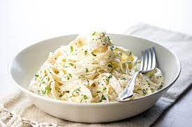
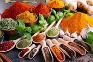

HOW TO MAKE Fettuccine Alfredo

Fettuccine Alfredo with chicken
This rich and creamy fettuccine Alfredo recipe is easy enough for beginner cooks, but it's impressive enough for company.
How to make Fettuccine Alfredo by yourself
In the following articles you will find yourself guided, after the ingredients of course, step-by-step to fully make the dish of your dreams for the night, so lets get to it:
Fettuccine Alfredo Ingredients
These are the simple ingredients you'll need to make this fettuccine Alfredo recipe:
- Pasta: DUH!! no fettuccine without the pasta
- Butter: 2 sticks, stay away if you're on a healthy diet
- Cream: a big ahh cup of heavy cream
- Seasoning
this is not an american cuisine. we are not making
mac & cheese we use seasonings here!!
- Cheese: You'll need Romano and Parmesan cheeses
How to Make Homemade Fettuccine Alfredo
So this is what you are going to do with the ingredients;
- Cook the pasta
- Melt the butter and cream together on the stove, season, and stir in the cheese.
- Toss the pasta in the cheese sauce.

Don't assume I'm going to leave you without serving some appetizers with this plate
- appetizers:
- Balsamic
- Brochette
- Toasted Garlic Bread
- Fried Stuffed Squash Blossoms
as for the Mix-ins: chicken, shrimp, sausage, green peas, broccoli, mushrooms (basically whatever you want to put)
Bon appetite!!